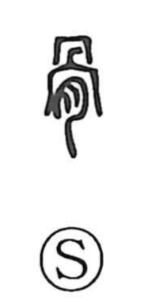

骨

Kun: hone | On: kotsu
bone ・ skeleton ・ framework
Explanation
骨 depicts bone with flesh still attached. The upper element, 冎, represents the bony structure above the chest; the lower 月-shaped element is 肉, flesh. The whole presents the body's firm inner substance with flesh around it.
From a bone come the framework of a body and, more broadly, the body itself. The stiffness and straightness of that supporting material also lend the word senses of hardness and sharpness.
Applied to a person, the inner framework becomes character, bearing, and resolute spirit, as in 気骨 and 骨力. The visible skeleton provides a concrete basis for speaking of something's strength of structure or a person's unyielding disposition.